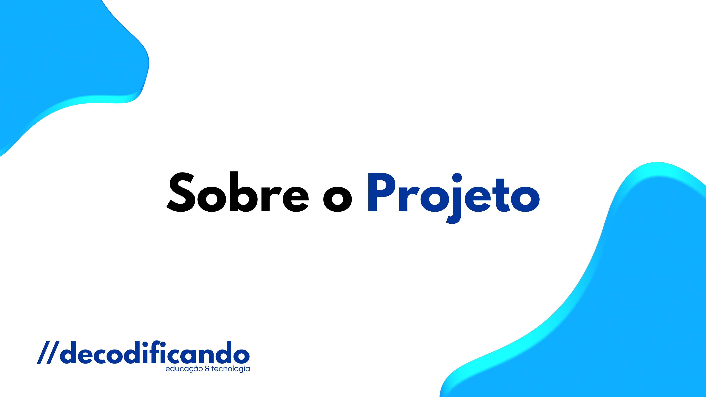
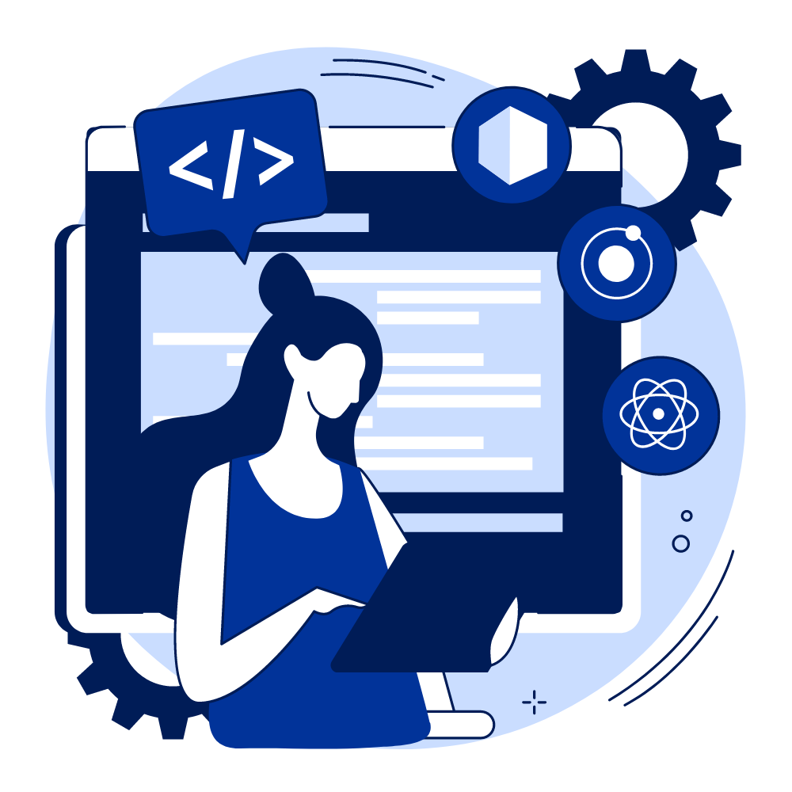
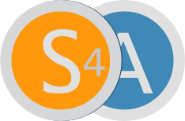

A INICIATIVA_
O século 21 exige que as novas gerações dominem múltiplas linguagens, entre elas a computacional. Assim, crianças e jovens poderão ser mais do que usuários da tecnologia, mas também criadores dela, sendo capazes de atender às novas demandas da sociedade e transformar realidades. Este programa busca, por meio do pensamento computacional e das linguagens de programação, desenvolver competências e promover a educação integral.
COMO FUNCIONA_
Por meio da formação de educadores e parcerias com instituições do ensino superior, a proposta amplia a inserção dos alunos no universo digital utilizando ferramentas gratuitas de programação computacional. Ao programar e construir projetos com o uso da programação, os estudantes desenvolvem competências cognitivas e socioemocionais fundamentais para a vida no século 21, como criatividade, resolução de problemas e cooperação.

OBJETIVOS_
Com o objetivo de contribuir com a promoção da educação integral e o desenvolvimento de competências socioemocionais, o DECODIFICANDO foi projetado para ser aplicado em escolas públicas e privadas por meio da formação de educadores, tornando-os aptos a desenvolverem atividades relacionadas ao tema em sala de aula, e da parceria com instituições de ensino locais. Por meio de trilhas de atividades específicas do 4º ao 9º ano do Ensino Fundamental, os estudantes são convidados a explorar conceitos e práticas do pensamento computacional por meio de vivências lúdicas e orientadas ao desenvolvimento de projetos. As atividades são desenvolvidas ao longo do ano letivo, podendo ocorrer no decorrer das aulas ou no contraturno escolar, conforme a realidade de cada rede. Os estudantes são desafiados a construir artefatos com o auxílio das linguagens de programação trabalhando em times para a construção de jogos, aplicativos e outras mídias, compartilhando e comemorando seus aprendizados em eventos com toda a comunidade escolar. Letrados em linguagens de programação diversas, estudantes e professores podem ampliar suas capacidades de criação e expansão no mundo digital.
MÓDULOS_
1. CODE.org
A Code.org é uma plataforma que disponibiliza recursos para aprender e ensinar ciência da computação, através de jogos educacionais digitais, de forma gratuita. A principal iniciativa para disseminação da plataforma é a “Hora do Código”.

2. Scratch
O Scratch é uma linguagem de programação e uma comunidade online onde você pode criar suas próprias histórias, jogos e animações interativas, e compartilhar suas criações com pessoas do mundo todo.

3. APP Inventor
O MIT App Inventor é uma ferramenta de código aberto que permite a criação de aplicativos para Android baseado na programação em blocos, permitindo à leigos apreender a lógica da programação e desenvolver aplicativos condizente a prática social onde atuam.

1. CODE.org
S4A é uma modificação do Scratch que permite programação simples da plataforma de hardware aberto Arduino. O objetivo também é fornecer uma interface de alto nível para programadores de Arduino com funcionalidades tais quais interagir com um conjunto de placas através de eventos de usuários.

O DESENVOLVEDOR_
Thomaz Ortiz Neto - Desenvolvedor